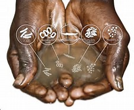
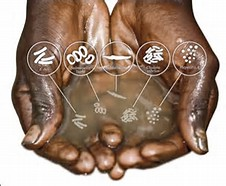

INTRODUCTION
Adequate drinking water, saniation, and hygiene are all essential ingredient of human health. the same is true for proper wastwater management, which is a basicprerequisite for environmental health. In developing upon this services bring economic gains and also help to build resilience given increasing variability. Many countries are struggling to cope with water shortages and existing water infrastructure. These countries face population growth rapidly in these area. Basic need remain unmet, and the human right to water sanitation remains unrealized for billions of people around the world. The global water security has risen on the international agender. the problem of developing countries, such as increased risk of disease from unsafe drinkinf water and poor sanitation.
PROBLEM AFFECTING SOME COMMUITY
In our community we face series of problems in haveing good drinking water. during the rain season the water people drink is contaminated due to the rain, were people fetch their drinking is from a stream and when it's rain all the garbbage will be coming down from the hill and contaminate the water.
SITE OF DRINKING WATER
 
